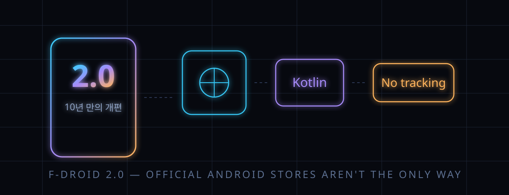

F-Droid 2.0 — "플레이 없이 폰 쓰기"가 10년 만에 다시 태어났다 (HackerNews 1160표)

결론부터: 구글 플레이 없이 안드로이드 앱을 깔고 갱신하는 가장 오래된 방법, F-Droid가 클라이언트 2.0을 내놨다. 인터페이스를 코틀린과 제트팩 컴포즈로 통째 갈아엿고, "다운로드 후에야 승인창이 뜨던" 설치 흐름을 앱 저장소급으로 개선했다. 공식 발표는 2026년 9월 24일, 스스로 "10년 만의 최대 업데이트"라고 적었다.
HackerNews에선 이틀 만에 1160표를 받았다. 반응은 "이제야 메인스트림과 같은 체감"이라는 환호와 "보안·프라이버시 기능이 오히려 줄었다"는 우려가 반반이었다.
앱 장터가 하나 늘었다는 뉴스가 아니라, "스마트폰 소프트웨어 유통은 제조사 상점이 전담한다"는 전제에 대한 공개된 반례가 다시 정렬됐다는 얘기다.
30초 요약
| 항목 | 내용 |
|---|---|
| 무슨 일 | F-Droid가 공식 클라이언트 2.0을 공개 (발표 2026-09-24). 1년 넘게 진행한 재작성 프로젝트로, 지난 10년간 최대 규모 업데이트라고 밝혔다 |
| 기술 | 주요 구성요소를 코틀린 + 제트팩 컴포즈로 재작성. 최소 안드로이드 7.0 (안드로이드 6 이하는 구버전 클라이언트로 계속 사용 가능) |
| 설치 경험 | EU 디지털시장법(DMA) 등으로 열린 신규 안드로이드 설치 API를 활용해 "설치를 결심한 직후 승인, 그다음 다운로드" 순서로 변경. 테스트 릴리스 14회를 거쳐 순차 배포 중 |
| 탐색 | Discover·Search·My Apps 3단 내비게이션. 게임 카테고리를 17개 하위 유형으로 분리, 검색이 설명문·분류·번역본까지 뒤지고 한·중·일(CJK) 처리를 개선했다고 발표 |
| 규모 | 2026-09-25 기준 공식 리포지토리 인덱스에는 4,455개 앱이 등록돼 있다 (직접 조회한 값) |
| 논란 | 패닉 버튼 연동 앱 삭제 기능 미탑재, 앱 위장 기능을 '아이콘·이름만 가림'으로 축소, 자동 갱신 기본값 전환 — HN 댓글창의 주 화두 |
1. 무엇이 터졌나
F-Droid는 2010년대 초반부터 이어진 오픈소스 안드로이드 앱 카탈로그다. 광고·추적·비자유 종속 같은 요소를 '반(反)기능'으로 표시하는 규칙 하나만큼은 10년째 업계에 없다. 그런데 정작 그 규칙을 보여주는 앱 자체는 오래된 안드로이드 코드 관성에 묻혀 있었다는 게 이번 개편의 출발점이다.
공개된 내용을 쪼개면 이렇다. 화면은 Discover(발견)·Search(검색)·My Apps(내 앱) 세 갈래로 줄였고, 설정과 Nearby Swap(근거리 전송)은 상단 바 한 번 터치로 빼냈다. 게임 한 덩어리였던 분류는 17개 하위 유형으로 나뉘었고, 분류 체계 전체에 상위 '메타 분류'를 씌워 탐색 경로를 짧게 만들었다는 게 제작진의 설명이다.
검색은 앱 이름만 보던 방식에서 벗어나 설명문·분류·번역된 텍스트까지 대상에 넣었고, 최근 검색어를 기억한다. 제작진이 특히 이름을 올려 강조한 건 한·중·일 문자 처리 개선이다 — 로마자 표기 앱 이름이 아니라 한국어 설명문으로 검색이 되는 상점을 만든다는 뜻이다.
체감이 가장 큰 변화는 설치 흐름이다. 기존 F-Droid는 "다운로드→설치 승인" 순서가 안드로이드 시스템에 묶여 있어 앱 저장소 대비 늘 한 박자 느렸다. 2.0은 EU의 디지털시장법(DMA)과 각국 반독점 조치로 안드로이드가 제3자 앱 저장소에 열어준 신규 API(설치 사전 승인 계열)를 받아들여, "설치를 고른 직후 승인하고 이후 자동으로 깔리는" 구조를 쓴다. 제작진 표현을 빌리면 공식 안드로이드 기기에서 기본 내장 상점의 경험에 "꽤 가까이" 다가간 것이다.
자동 갱신도 기본값이 됐다. 당기면 새로고침(풀투리프레시) 제스처는 스크롤 전용으로 남고, 수동 갱신은 목록 메뉴 안으로 들어갔다. 제작진은 "다시 누를 일이 없어진 새로고침이 최고의 새로고침"이라고 정리했다.
2. 왜 대단한 얘기인가
① "추적 없는 앱 장터는 쓸모가 없다"는 명제에 대한 반증 시도
상업 앱 저장소의 검색·추천은 전부 사용자 데이터 위에서 굴러간다. F-Droid는 그 축약판을 "당신을 추적하지도, 앱에 붙들어 두려 애쓰지도 않으면서" 구현했다고 못 박았다. 개인화 없이 발견(discoverability)을 만드는 해법이 분류 계층과 검색 범위 확장이라는 점이 이번 설계의 핵심 명제다.
② 유지보수 빚을 갚은 방법론
이 프로젝트는 새 기능보다 '기존 기능의 이식'이 절반이었다. 인터페이스를 컴포즈로 갈고 언어를 코틀린으로 통일한 건 성능 때문이 아니라 참여자 모집을 위한 선택이다. 요즘 안드로이드 개발자라면 누구나 바로 고칠 수 있는 코드가 목표였다. 재단·기금(NLnet, Open Technology Fund 계열 기금들, Calyx Institute의 협찬)과 자원봉사자, 그리고 OTF 보안 랩과 Convocation이 진행한 독립 보안 검토까지 붙었다는 점에서, 오픈소스 프로젝트의 '재작성 자금 조달' 선례로도 남을 작업이다.
③ 한국 독자에겐 더 실감나는 지점
검색이 한국어 설명문을 뒤진다는 건, 국내 개발자들이 올리는 오픈소스 앱(전자출입명부 대체수단, 지하철 노선도, 공공데이터 앱류)이 이름 영문 표기가 아니라 사람 말로 발견된다는 뜻이다. 아직 2.0 배포가 순차 진행 중이라 체감 시점은 기기마다 다르다.
3. 바로 써먹기 — 오늘 5분이면 F-Droid 입문
| 상황 | 2.0에서 할 일 | 왜 |
|---|---|---|
| 광고 없는 앱 찾기 | Discover에서 분류로 들어간 뒤 필터로 '광고/추적' 반기능 앱을 제외 | 반기능 표시는 F-Droid 원조 기능 — 2.0은 필터로 조합 가능 |
| 구글 의존 앱 대체 | Search에서 기능 설명으로 검색 (예: "지도", "문서 뷰어") — 이름 몰라도 나옴 | 설명문·분류 검색이 2.0에서 새로 열린 경로 |
| 폰에서 폰으로 앱 전달 | 상단 바의 Near Nearby Swap (근거리 전송 — 단, 2.0 1차판엔 구버전만 실림. 새 구현 개발 중) | 네트워크 없는 기기 간 APK 전달은 이 앱의 전매특허 |
| 민감한 설치 목록 노출 | 설정에서 앱 위장(아이콘·이름 가림) 사용 — 다만 설정 화면과 설치 목록까지 가려지진 않는다 | 2.0은 보호 범위를 정직하게 표시하도록 설계를 바꿈 |
| 개발자라면 | 내 앱을 F-Droid 리포에 등록 — 저장소 메타데이터(YAML)로 서명·빌드를 위임 | GPL 프로젝트의 '소스에서 바로 설치되는' 유통 구조는 여기뿐 |
한 줄 요약. 플레이가 유일한 길이 아니라는 걸 손으로 확인하는 데 드는 비용은, 이제 5분이다.
4. 해외 반응 쟁점 (달린 댓글 307개)
① "이제야 쓸 만해졌다" vs "이미 다른 앱으로 떠났다". 화면 개편 자체는 환영 일색이었다. "오래 기다렸으니 공식 앱으로 돌아온다"(대안 클라이언트 Droid-ify 사용자 포함)는 쪽과 "저장소 갱신 깨지는 건 몇 년 전부터 아는 고장이라 안 썼다"는 냉소가 반반. 정작 배포 첫날 목격담은 "2.0이 뜨는데 1.23.2가 '권장'으로 떠서 헤맸다"였다.
② "기능이 줄었다" 진영. 발표문 자체가 인정한 후퇴 두 대목 — 패닉 신호 연동 앱 삭제의 1차판 미탑재, '계산기 위장'을 아이콘·이름만 가리는 방식으로 축소한 것 — 을 두고, 위협받는 사용자에겐 사용자 경험 문제가 아니라 안전 문제라는 반발이 달렸다. 제작진 해명("위장 범위 한계를 정직하게 보여주는 편이 낫다")으로도 안 접히는 논점이라, 이 글 5번 항목과 연결해 읽어달라.
③ "그래도 앱 수·신뢰 체감은 별개". "F-Droid만으로 폰을 다 채우느냐"는 질문이 상위에 올랐고, 단골 답은 Aurora Store(플레이 전용 앱용)·Obtainium(개발자 페이지 직수신)·IzzyOnDroid(서드파티 리포) 병용이었다. 다만 "남의 리포는 공식 리포가 거르는 '소스에서 빌드' 보증이 빠진다"는 경계가 같이 달렸다. 은행·관공서 앱 부재 불만엔 "결제 빼면 대부분 브라우저로 된다"는 반론이 붙었다.
④ 구조 지적: 인덱스 설계·특권 확장. "여러 MB짜리 리포 인덱스를 매번 통째로 받아야 하는 구식 구조"라는 설계 비판과, 저장소 타임스탬프 오류 토스트가 뜬다는 불만이 반복됐다. 특권 확장(FPE) 미지원엔 "세션 설치기가 FPE를 완전히 대체하진 못하니 재개발을 살피고 있다"는 핵심 개발자(eighthave)의 직접 답변이 달렸다.
⑤ "이 건 사이드로딩 규제 논쟁과 한 몸". 스레드 밑반은 구글의 설치 경로 통제 움직임이었다. "설치를 규제하는 쪽으로 법이 오면 F-Droid가 먼저 걸린다"는 우려, "이미 개발자 옵션에 차단 스위치가 생겼고 이동 신청 후 24시간 대기까지 있다"는 실사용 목격, "내 기기에 앱 깔기를 악마화하는 '사이드로딩'이라는 말부터 없애야 한다"는 반발이 뒤엉켰다. 2.0을 리뉴얼이 아니라 '유통 주권' 확보 경쟁의 최전선으로 읽는 시각이다.
⑥ "시장 아니라 입법 문제". "자유 앱 장터가 답이 아니라, 웹 설치를 막는 협박 화면(스케어월)을 금지하는 법이 답"이라는 주장과 "그럼에도 기본 안내선은 필요하다"는 반론이 붙었다. 10년 묵은 '상점은 하나' 전제를 흔드는 실험이라는 평가로 수렴했다.
5. 마시기 전 주의
- 2.0은 14차례 시험판 뒤 순차 배포 단계다. 오늘 설치해도 구버전 화면일 수 있다.
- 특권 확장(FPE)은 2.0이 아직 지원하지 않는다. 시스템 앱으로 통합된 커스텀 롬(CalyxOS·iodéOS 등) 사용자는 갱신 전 해당 롬 공지 확인이 먼저다.
- 자동 갱신 기본값은 설정에서 되돌릴 수 있다. '모든 앱 자동 갱신'을 원치 않는 환경(업무용·구독 관리용)에선 먼저 확인하자.
- 앱 4,455개는 2026-09-25 시점 공식 리포 인덱스 조회값이고, 앱별 신뢰 수준은 각 앱 페이지의 서명·반기능 표시로 개별 확인해야 한다.
- '플레이를 지운다'는 실험은 은행·관공서 앱이 안 깔릴 각오를 했을 때만 의미 있다. F-Droid는 대체재가 아니라 병렬 저장소로 쓰는 편이 현실적이다.
바로 가기
- F-Droid 2.0 공식 발표문 — 변경·이동·삭제 기능 전 목록 (2026-09-24)
- F-Droid 클라이언트 자체 다운로드 페이지 — 2.0 릴리스 노트·안드로이드 최소 버전
- HackerNews 댓글창 — 1160표 논쟁 현장
개발자 1,900명이 "AI는 기본값은 기기 안에"라고 찍은 글 — 클라우드 의존을 거부하는 흐름의 다른 얼굴. 앱이 폰 안에서 도는 게 원칙인 세계와 통한다.
AI 속보 시리즈 — 해외에서 먼저 검증된 소식만 골라 숫자와 한계까지.
도구 코너 — 내 PC로 도는 AI 모델 체크 (준비 중).